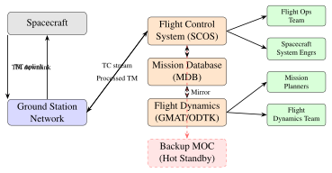

Chapter 23: Mission Operations and Ground Control¶
23.1 Introduction to Mission Operations¶
Mission operations encompass the complete set of activities required to fly a spacecraft from launch through end-of-life disposal. Unlike the design and manufacturing phases, operations must be sustained continuously for years or decades, translating engineering intent into daily commands and ensuring that scientific or commercial objectives are met within a resource-constrained environment.
The scope of modern mission operations has expanded considerably. Early missions relied on a small team of engineers who knew every switch and relay. Today, large programmes such as the James Webb Space Telescope or the Galileo navigation constellation employ hundreds of specialists spanning multiple time zones, integrated through networked Mission Operations Centers (MOCs) and ground data systems capable of processing millions of telemetry points per hour. At the other extreme, New Space missions may operate constellations of hundreds of small satellites with skeleton crews empowered by high levels of automation.
Core Mission Operations Functions Monitoring: Continuous receipt and evaluation of spacecraft telemetry to verify health and safety of all subsystems.
Commanding: Uplink of telecommands for routine operations, special events, and anomaly recovery.
Orbit Determination: Tracking of the spacecraft trajectory and propagation of state vectors for contact prediction and manoeuvre planning.
Flight Dynamics: Manoeuvre design, attitude reconstruction, and orbit control.
Planning and Scheduling: Coordination of ground station contacts, science observations, and payload operations within power, thermal, and data constraints.
Anomaly Resolution: Detection, isolation, and recovery from both on-board and ground-based anomalies.
This chapter describes each of these functions in detail. Section 23.2 covers the physical and organisational architecture of a MOC. Sections 23.3–23.9 address monitoring, commanding, orbit determination, manoeuvre planning, LEOP, scheduling, and end-of-life procedures. Section 23.7 introduces the software systems underlying modern operations, and Section 23.8 examines the increasing role of automation and artificial intelligence.
23.2 Mission Operations Center Architecture¶
23.2.1 Organisational Structure¶
A Mission Operations Center integrates multiple specialist teams around a common operational picture. For a large science or telecommunications mission the typical organisational chart includes:
-
Flight Operations Team (FOT): Real-time spacecraft controllers who monitor telemetry, execute commands, and interface with ground station networks. Operating in rotating 8–12-hour shifts, the FOT is the first line of response to anomalies.
-
Mission Planners: Develop the short-range (daily) and medium-range (weekly) activity plans, resolving conflicts between payload demands, tracking contacts, and resource budgets. They maintain the master schedule driving all operations.
-
Spacecraft System Engineers (SSE): Subsystem specialists (power, thermal, ADCS, propulsion, TT&C) who provide technical authority on configuration changes and anomaly resolution. They typically work day shifts with on-call rotation.
-
Ground Station Engineers: Responsible for the health of each Earth terminal in the tracking network, managing antenna pointing predictions, modulation settings, and ranging equipment calibration.
-
Science/Payload Team: For science missions, these specialists define observation sequences and assess data quality. For commercial missions an equivalent operations team manages the payload functional performance.
-
Flight Dynamics (FD) Team: Performs orbit determination, generates predicted ephemerides for contact prediction, designs manoeuvres, and assesses conjunction risk.
23.2.2 Redundancy and Fault Tolerance¶
A MOC must never be a single point of failure. Standard approaches to redundancy include:
Hot standby primary/backup: Two parallel sets of mission control workstations continuously mirror operational state. If the primary fails, the backup assumes control without interrupting downlink processing. At ESA’s ESOC the backup control room (BCR) mirrors the Main Control Room (MCR) in real time.
Geographic distribution: Critical missions operate from geographically separated facilities. NASA’s Deep Space Network (DSN) divides between Goldstone CA, Madrid, and Canberra, ensuring continuous contact with deep-space assets regardless of Earth rotation. For LEO missions, a backup MOC in a separate city protects against local disasters.
Network redundancy: MOC communications rely on dedicated leased lines, VPN-encrypted internet paths, and satellite backup links. Voice networks provide POTS fallback when IP infrastructure fails.
23.2.3 MOC Infrastructure¶
-
Large display walls: Typically tiled LCD arrays (6\(\times\)4 to 12\(\times\)4 panels) showing real-time orbit track, telemetry overview pages, alarm summaries, and network status. Matrox or similar video routing allows flexible assignment of sources to display segments.
-
Telemetry display workstations: Each position runs the mission control system client displaying engineering unit values, limit-check colouring (green/yellow/red), historical trend plots, and parameter lists. Dual-monitor configurations are standard.
-
KVM (Keyboard-Video-Mouse) systems: Reduce physical hardware at each operations desk by allowing a single keyboard and display to switch between multiple server connections. Crash-cart KVMs provide direct access to server back-planes during outages.
-
Voice networks: Dedicated closed-loop intercom systems (Telex, RTS, Clear-Com) connect controllers to ground station operators, launch control, and management. Phone patching loops allow external agency integration during launch.
-
Cyber-security boundary: Mission networks are physically or logically isolated from corporate IT. One-way data diodes prevent exfiltration of proprietary telemetry, while allow-listed command paths enforce access control.
23.2.4 Representative MOCs¶
Table 23.1 summarises the principal mission operations facilities operated by major space agencies.
| Facility | Agency | Location | Key Missions |
|---|---|---|---|
| ESOC | ESA | Darmstadt, Germany | Rosetta, Herschel, Gaia, Mars Express |
| JPL/SFOF | NASA | Pasadena CA, USA | Mars rovers, Voyager, NISAR |
| GSFC/SOCC | NASA | Greenbelt MD, USA | Hubble, Swift, TESS, JWST |
| NASA JSC | NASA | Houston TX, USA | ISS, crewed Orion missions |
| JAXA ISAS | JAXA | Sagamihara, Japan | Hayabusa2, SLIM |
| ISRO ISTRAC | ISRO | Bengaluru, India | Chandrayaan, Mars Orbiter |
23.2.5 Operations Readiness Review¶
Before the first command is uplinked to a newly launched spacecraft, agencies mandate an Operations Readiness Review (ORR). The ORR formally certifies that all elements required for safe flight operations are in place:
-
Mission control system integration testing completed and open anomalies closed
-
Ground station network verified end-to-end against flight hardware simulators
-
Mission database (TM/TC definitions, calibration curves, limits) validated and version-controlled
-
Flight procedures reviewed, simulated, and signed off by subsystem engineers
-
Flight Operations Team trained to proficiency, with staffing plans covering 24/7 LEOP
-
Communication links (voice, data, video) tested to all network sites
-
Anomaly resolution procedures documented and responsibility matrix agreed
The ORR outcome is a formal go/no-go decision recorded in a review data package that becomes a permanent mission archive artefact.
23.3 Spacecraft Monitoring and Control¶
23.3.1 Telemetry Processing¶
Modern spacecraft telemetry follows the CCSDS (Consultative Committee for Space Data Systems) standard packet telemetry architecture, defined in CCSDS 102.0-B-5 and 133.0-B-2.
Telemetry frames: The space data link layer groups source packets into fixed-length Transfer Frames (TF). Each frame carries a Master Channel Identifier (MCID), Virtual Channel Identifier (VCID), frame counter, and operational control field. Virtual channels allow a single physical downlink to carry multiple independent data streams simultaneously—for example, housekeeping telemetry on VCID 0, science data on VCID 1, and replay memory dumps on VCID 2.
Source packets: Within each frame, CCSDS Space Packets (CCSDS 133.0-B-2) carry application data. Each packet contains a primary header (6 bytes) with Application Process Identifier (APID), sequence count, and data length, followed by user data including a time stamp and the telemetry parameters themselves.
Calibration: Raw instrument counts received from analogue-to-digital converters must be converted to engineering units. Two calibration approaches are used:
-
Polynomial calibration: \(y = a_0 + a_1 x + a_2 x^2 + \cdots + a_n x^n\), where \(x\) is the raw count and coefficients \(a_i\) are derived from ground calibration data. Efficient for well-behaved sensors such as temperature sensors with known response curves.
-
Table (look-up) calibration: A piecewise-linear interpolation between \((x_i,\, y_i)\) pairs from the calibration table. Used for nonlinear sensors such as thermistors or for curves that cannot be well-approximated by a low-degree polynomial.
Limit checking: Each telemetry parameter is assigned soft (yellow) and hard (red) limit bands:
-
Yellow limits: Out-of-nominal but not immediately dangerous. Triggers a visual alert and email/SMS notification. The operator investigates but no automated action is taken.
-
Red limits: Critical violation requiring immediate response. Triggers audible alarm, automatic event logging, and may initiate an on-board FDIR response.
Persistent violation alerting suppresses nuisance alarms by requiring a parameter to remain outside limits for \(N\) consecutive samples (typically 3–5) before the alarm is raised, preventing single-sample noise spikes from disrupting operations.
23.3.2 Commanding¶
The CCSDS Telecommand standard (CCSDS 232.0-B-4) defines the uplink data link for spacecraft commanding. Commands traverse the following path:
-
Command entry: Operator selects command from mission database at MOC workstation. Critical commands require two-person integrity (TPI)—a second authorised person independently verifies and approves before uplink.
-
TC packet generation: The mission control system encodes the command into a CCSDS Telecommand (TC) packet with a command word, parameters, and error control field (BCH or CRC).
-
CLTU (Command Link Transfer Unit): TC packets are encapsulated in CLTUs with start sequence, BCH error protection, and idle fill for the physical layer.
-
Uplink: The MOC transmits to the ground station via terrestrial link; the station modulates the CLTU on the RF carrier (typically S-band or X-band) for uplink to the spacecraft.
-
Decoder: The on-board radiation-hardened TC receiver demodulates, decodes, and validates the BCH, rejecting corrupt CLTUs before they reach the command decoder.
-
TC verification: Three-stage verification: (a) TC uplink confirmed by ground station lock/signal indicator; (b) TC execution confirmed by spacecraft event packet (EVR—Event Record); (c) housekeeping TM confirms the commanded action (e.g., a valve confirmed open by pressure telemetry rise).
Two-Person Integrity for Critical Commands Commands that are irreversible or safety-critical—such as propulsion valve opens, pyrotechnic firing, or safe-mode override—require two-person integrity (TPI). The primary operator enters and verifies the command; an independent second operator (or supervisor) authenticates via a separate console session before transmission is enabled. This mirrors nuclear-launch protocols and is mandated by most agency flight rules to prevent single-point human error.
23.3.3 Health and Safety Monitoring¶
FDIR (Fault Detection, Isolation, and Recovery): On-board autonomy software continuously monitors critical parameters against pre-defined thresholds. When a fault is detected, the FDIR logic executes a three-phase response:
-
Detect: Identifies the out-of-limit condition on a subsystem parameter using threshold comparison or rate-of-change monitoring.
-
Isolate: Determines the probable failed unit by cross-checking related parameters (e.g., differencing primary and redundant sensor readings).
-
Recover: Executes a pre-programmed recovery action—switch to redundant unit, reduce power draw, or initiate safe mode.
Safe mode: A minimum-functionality spacecraft state entered when a critical anomaly is detected on-board. Criteria for autonomous safe mode entry typically include: battery depth of discharge below 20%, loss of Earth/Sun pointing beyond a set angle, onboard computer (OBC) watchdog timer expiry, or thermal limits exceeded. In safe mode the spacecraft autonomously:
-
Points solar arrays toward the Sun for maximum power generation regardless of mission attitude
-
Disables non-essential payloads and non-survival heaters
-
Transmits a reduced-rate beacon or safe-mode telemetry stream for ground AOS on an omni antenna
-
Waits for ground intervention for a configurable hold period before attempting autonomous recovery
OBCP (On-Board Control Procedure): Scripted command sequences stored in spacecraft memory and executed autonomously. OBCPs handle complex multi-step recovery scenarios—for example, re-initialising a star tracker after a bright-object entry—without requiring real-time human intervention. This is critical for bridging ground station contact gaps, particularly for interplanetary missions with communication delays of tens of minutes.
23.3.4 Real-Time Anomaly Resolution¶
When an anomaly occurs, the operations team follows a structured resolution process:
-
Anomaly Report (AR): The controller documents the initial observation—time, affected parameters, spacecraft state, and ground station configuration—creating a time-stamped record that becomes the foundation of the investigation.
-
Preliminary assessment: The subsystem specialist conducts an initial technical assessment within 1–4 hours, classifying severity and identifying immediate workarounds to restore safe operations.
-
Root Cause Analysis (RCA): A formal engineering investigation involving telemetry reconstruction, hardware review, and ground test correlation. May take days to weeks for complex anomalies involving novel failure modes.
-
Corrective action: Implementation of a patch (flight software update, parameter table change, procedure revision) to prevent recurrence and restore full mission capability.
-
Non-Conformance Report (NCR): Formal documentation of the anomaly, RCA outcome, corrective action, and lessons learned. NCRs are archived and shared across programmes to prevent repeat occurrences on subsequent missions.
23.4 Orbit Determination and Manoeuvre Planning¶
23.4.1 Orbit Determination Process¶
Orbit determination (OD) is the process of estimating the spacecraft state vector \(\mathbf{x} = [\mathbf{r},\, \mathbf{v},\, p_1, …, p_n]^T\) from tracking measurements, where \(\mathbf{r}\) is position, \(\mathbf{v}\) is velocity, and \(p_i\) are force-model parameters such as solar radiation pressure coefficient or atmospheric drag coefficient. The primary measurement types are:
-
Two-way ranging: A tone or pseudorandom code modulated on the uplink is coherently transponded by the spacecraft and the round-trip delay is measured as two-way range. Range residuals feed the OD filter. The CCSDS TRK-2-34 standard defines the Tracking Data Message (TDM) format used to exchange measurements between DSN stations and navigation teams.
-
Doppler: Two-way Doppler shift measures the rate of change of slant range \(\dot{\rho}\), directly sensitive to the velocity component along the line-of-sight. Combined with ranging, provides a complete 3-D state determination from a single pass.
-
VLBI (Very Long Baseline Interferometry): Two geographically separated stations simultaneously receive the spacecraft downlink. The differential time of arrival (DTOA) constrains the plane-of-sky position to milliarcsecond accuracy, used for precision navigation on interplanetary missions.
-
Angles-only: Azimuth and elevation measurements from a single ground station, used during LEOP when two-way ranging equipment may not yet be initialised. Accuracy is limited (\(\sim\)1 km) but sufficient for initial AOS establishment and coarse state vector.
Two estimation approaches are used depending on mission phase and computational constraints:
Batch least-squares: All measurements over a tracking arc are processed simultaneously to minimise the weighted sum of squared residuals:
where \(\mathbf{z}\) is the observation vector, \(h(\mathbf{x})\) the computed (predicted) observation function, and \(\mathbf{W}\) the weighting matrix inversely proportional to measurement noise covariance. A 24-hour tracking arc combining Doppler and range data from two stations yields LEO position accuracy of approximately 10 m (3-\(\sigma\)).
Sequential Kalman filter: Measurements are processed one at a time, updating the state estimate and error covariance matrix \(\mathbf{P}\) recursively. The covariance update step is:
where \(\mathbf{K}_k = \mathbf{P}_{k|k-1}\mathbf{H}_k^T \left(\mathbf{H}_k \mathbf{P}_{k|k-1} \mathbf{H}_k^T + \mathbf{R}_k\right)^{-1}\) is the Kalman gain, \(\mathbf{H}_k\) the observation sensitivity matrix, and \(\mathbf{R}_k\) the measurement noise covariance. The covariance propagation between measurements uses the state transition matrix \(\boldsymbol{\Phi}\):
where \(\mathbf{Q}_k\) is the process noise covariance accounting for unmodelled force perturbations. The sequential filter is better suited to real-time tracking during LEOP or post-manoeuvre recovery.
23.4.2 Orbit Manoeuvre Design¶
A velocity change \(\Delta v\) achieves a desired orbit modification. For impulsive burns (thrust duration much less than orbital period), the manoeuvre is treated as an instantaneous velocity increment. For finite burns, the required propellant mass follows the Tsiolkovsky rocket equation and the burn duration is:
where \(m_0\) is the spacecraft wet mass (kg), \(F_{\text{thrust}}\) is the thrust force (N), \(g_0 = 9.80665\) m/s\(^2\) is standard gravity, and \(I_{sp}\) is the thruster specific impulse (s). For small \(\Delta v\) relative to the effective exhaust velocity \(c = g_0 I_{sp}\), this simplifies to:
The manoeuvre execution timeline follows a standard operations workflow: flight dynamics team produces a manoeuvre recommendation \(\to\) operations team and propulsion SSE review \(\to\) command sequence generated and verified \(\to\) TPI authorisation obtained \(\to\) command uplink during contact window \(\to\) telemetry monitored during burn (attitude, thrust duration, propellant mass flow) \(\to\) post-manoeuvre OD within 4 hours to verify achieved orbit against design requirement.
23.4.3 Station-Keeping¶
GEO station-keeping: Geostationary satellites experience perturbations that must be counteracted by periodic manoeuvres to remain within their designated orbital box:
-
North/South (N/S) station-keeping: The gravitational attraction of the Sun and Moon acting on the inclined orbital plane causes inclination growth at approximately \(0.75^\circ\)/year if uncorrected. Corrective manoeuvres require approximately 50 m/s per year of \(\Delta v\) to maintain the satellite within a \(\pm 0.1^\circ\) latitude dead-band. N/S manoeuvres dominate the GEO station-keeping budget.
-
East/West (E/W) station-keeping: The triaxiality of Earth’s gravitational field creates two stable (\(75^\circ\)E, \(105^\circ\)W) and two unstable (\(10^\circ\)W, \(170^\circ\)E) equilibrium longitudes. Satellites drift toward the nearest stable point unless corrected with approximately 2 m/s per year within a \(\pm 0.1^\circ\) longitude dead-band.
LEO drag compensation: Atmospheric drag at LEO altitudes (400–800 km) continuously reduces the semi-major axis, causing orbital decay. Drag makeup manoeuvres using the propulsion system maintain the target altitude. At 550 km, solar activity variations cause atmospheric density changes of up to a factor of 10 between solar minimum and maximum, requiring adaptive manoeuvre planning and frequent re-optimisation of the station-keeping budget.
23.4.4 Conjunction Avoidance¶
The US Space Surveillance Network (SSN) operated by 18th Space Control Squadron tracks \(>\)30,000 objects and generates Conjunction Data Messages (CDMs) when a tracked object passes within a defined screening volume around a satellite. The standard workflow is:
-
SSN alert: CDM (CCSDS 508.0-B-1) received listing the secondary object, Time of Closest Approach (TCA), nominal miss distance, combined position covariance, and relative velocity.
-
CARA assessment: NASA’s Conjunction Assessment Risk Analysis (CARA) team evaluates the Probability of Collision (\(P_c\)) by integrating the combined position probability density function over the collision cross-section area (typically 10–100 m\(^2\) depending on satellite size).
-
Go/no-go threshold: If \(P_c > 10^{-4}\) (1-in-10,000) with TCA within 72 hours, a manoeuvre is considered. If \(P_c > 10^{-3}\), a manoeuvre is planned unless TCA is less than 4 hours (insufficient response time).
-
Manoeuvre design: A small \(\Delta v\) (typically 0.1–1 m/s) applied 24 hours before TCA shifts the orbital trajectory sufficiently to reduce \(P_c\) below threshold. Direction is chosen to minimise propellant expenditure while maintaining mission geometry.
-
Post-manoeuvre confirmation: Updated tracking from SSN or on-board GPS confirms achieved orbit; CARA reassesses \(P_c\) with updated post-manoeuvre covariance, typically reducing it to below \(10^{-6}\).
23.5 Launch and Early Orbit Phase¶
The Launch and Early Orbit Phase (LEOP) is the highest-risk operational period. Every deployment must be verified against tight timelines, and anomalies must be resolved before on-board power or propellant is exhausted. The MOC is fully staffed 24/7 with senior engineers on console and subsystem experts available on call. Table 23.2 shows a representative timeline for a GEO telecommunications mission.
| MET | Event | Description |
|---|---|---|
| T+0 min | Separation | Satellite separates from upper stage; separation switch opens; OBC wakes from launch sleep mode |
| T+0 to T+15 min | First AOS | Ground station acquires S-band beacon; TM lock; first telemetry pages verified nominal |
| T+15 to T+60 min | TM/TC checkout | Verify all subsystem telemetry valid; check power positive; execute initial command checkout sequence |
| T+1 to T+2 h | Sun acquisition | Coarse attitude manoeuvre to Sun-pointing using magnetorquers and coarse Sun sensors; solar arrays generating survival power |
| T+2 to T+4 h | Solar array deployment | Pyrotechnic release of array hold-down; deployment confirmed by motor telemetry and power bus current increase |
| T+4 to T+12 h | Apogee kick (LAM burn 1) | Liquid apogee motor burn raises apogee; Doppler tracking confirms \(\Delta v\); thermal monitoring during 60-minute burn |
| T+12 to T+24 h | GEO injection | Second LAM firing circularises orbit at 35,786 km; final inclination correction burn |
| T+24 to T+72 h | 72-hour checkout | Systematic functional checkout of all subsystems: thermal, AOCS fine-pointing, propulsion blowdown, TT&C |
| T+72 to T+96 h | Payload switch-on | Transponder and antenna deployment; payload functional verification; handover to operations team |
23.5.1 Critical Events¶
Pyrotechnic events (solar array release, antenna reflector deployment, nutation damper release) are the most irreversible acts in the LEOP timeline. Each is verified by:
-
A dedicated pyrotechnic firing command with TPI authorisation
-
Current sensing on the initiator circuit (squib fire confirmed by current pulse in housekeeping telemetry)
-
Secondary confirmation via deployment switch position telemetry or structural change in attitude rates
-
Accelerometer data showing the mechanical shock signature associated with mechanism release
Propulsion pressurisation sequences open pyrotechnic valves to feed propellant from tank to thruster, irreversibly committing the propulsion system to flight configuration. These require pre-arming commands, intermediate verifications, and a separate firing command with appropriate hold time for valve stabilisation.
23.5.2 Anomaly Handling During LEOP¶
LEOP anomaly response is governed by pre-planned contingency procedures:
-
Redundant command paths: If the prime ground station loses signal, pre-designated backup stations around the globe take over. A minimum of two independent tracking sites maintain visibility during critical events through cross-support agreements with ESA, KSAT, or SSC.
-
Safe mode recovery: If the spacecraft enters safe mode autonomously during LEOP, the MOC sends recovery commands via backup S-band patch antenna if the primary high-gain antenna (HGA) has not yet deployed.
-
Alternative AOS: Cross-support agreements with DSN, ESTRACK, or KSAT allow emergency contact if home-network stations fail during critical events.
-
Extended hold: For some missions, the on-board OBCP holds the current configuration indefinitely awaiting a ground command rather than proceeding autonomously into the next critical phase, ensuring ground control is always in the loop.
23.5.3 Safe Mode¶
Safe mode is designed to be survivable from any spacecraft state and to provide a stable, low-power configuration from which recovery is always possible:
-
Sun-pointing attitude maintained by body-mounted panels providing minimum 40% of beginning-of-life (BOL) power generation
-
Load-shedding reduces power draw: heaters on survival setpoints only, payload off, data recorder halted
-
Omni or medium-gain antenna used for beacon transmission at reduced data rate (e.g., 256 bps) to ensure AOS even from off-nominal attitude
-
After a configurable hold (typically 60–120 minutes), the OBCP may attempt an autonomous recovery sequence if no ground contact has been established within that window
23.6 Mission Planning and Scheduling¶
23.6.1 Contact Window Prediction¶
Ground station contact windows are determined by orbital geometry: the spacecraft must be above the minimum elevation angle \(E_{\min}\) (typically \(5^\circ\)) as seen from the station. For a circular orbit at altitude \(h\), the Earth central angle \(\rho\) subtended by the coverage arc satisfies:
The contact window duration for a specific pass depends on orbit geometry and station location and is computed by propagating the orbit using tools such as STK (Ansys Systems Tool Kit), GMAT (NASA/GSFC), or Orekit (CS Group, open-source). For a LEO satellite at 500 km altitude in a 51.6 inclination orbit, a station at \(51^\circ\)N with \(E_{\min} = 10^\circ\) sees contact windows of 8–12 minutes with 3–6 passes per day.
The approximate contact window duration at maximum elevation is:
where \(v_{\text{orb}} = \sqrt{\mu/(R_E+h)}\) is the orbital speed (\(\approx\)7.6 km/s at 500 km) and \(\rho_{\max}\) is the half-angle of the coverage arc from Equation (23.6). A 10-minute contact at 7.6 km/s spans approximately 4600 km of ground track.
23.6.2 Science Observation Planning¶
Constraint-driven scheduling resolves competing demands on the spacecraft resource budget:
-
Eclipse constraints: Some instruments (optical, thermal infrared) are restricted to sunlit or eclipsed periods; stray-light avoidance angles constrain pointing geometry relative to the Sun.
-
Power budget: Instrument duty cycles are limited by battery depth of discharge during eclipse and available power margin during daylight.
-
Thermal limits: Pointing manoeuvres must avoid Sun-avoidance keep-out zones (\(\pm 45^\circ\) from aperture axis, typically); some instruments require cool-down periods between long exposures.
-
Downlink capacity: Science data volume acquired must not exceed the on-board solid-state recorder (SSR) capacity or scheduled downlink allocation.
-
Priority ranking: Targets are ranked by science priority; the scheduler maximises weighted science return subject to all constraints.
23.6.3 Data Volume Planning¶
The fundamental data balance for a satellite contact pass is:
where \(R_{\text{link}}\) is the link data rate (bps), \(t_{\text{contact}}\) is the contact duration (s), and \(\eta_{\text{eff}}\) is the link efficiency accounting for coding overhead, frame synchronisation, and antenna acquisition time (typically 0.85–0.95). For the on-board data budget to remain balanced:
where \(\Delta V_{\text{storage}}\) is the net change in SSR fill level. If science acquisition rates consistently exceed downlink capacity, either observation duty cycles must be reduced or additional ground contacts must be scheduled at backup stations.
23.6.4 Resource Allocation¶
Power profile: Each spacecraft operating mode has a defined power budget driven by the electrical power system (EPS) analysis. The worst case is typically the longest eclipse with maximum payload load. Power modes include:
-
Nominal sunlit: full payload, heaters off, battery charging (\(\sim\)30 A excess current for a 28 V bus)
-
Eclipse: payload on, battery discharge limited to 30% depth of discharge (DoD) for Li-ion cells
-
Safe mode: payload off, survival heaters, battery charge recovery from reduced solar array current
Propellant budget tracking: The mission propellant balance is maintained as:
where each manoeuvre consumes \(\Delta m_{\Delta v} = m_0\!\left(1 - e^{-\Delta v/(g_0 I_{sp})}\right)\) kg. Flight dynamics teams maintain a propellant budget spreadsheet updated after every manoeuvre, projecting end-of-life propellant margin against the station-keeping lifetime requirement.
23.7 Ground Data Systems¶
23.7.1 SCOS-2000¶
ESA’s Spacecraft Control and Operations System (SCOS-2000) is the standard mission control system used across ESA science missions including Rosetta, Herschel, Gaia, Mars Express, Envisat, and BepiColombo. Key features include:
-
TM/TC database: Centralised Mission Database (MDB) holding all telemetry parameter definitions (calibration curves, limits), telecommand encodings, and operational sequences in a PostgreSQL-backed relational database.
-
Packet processing: CCSDS-compliant TM frame decommutation, virtual channel demultiplexing, source packet extraction, and parameter extraction pipeline capable of processing thousands of parameters per second.
-
Alarm management: Multi-level limit checking (soft/hard) with acknowledgement state tracking, inhibit capability for known off-nominal conditions, and alarm correlation for related parameter groups.
-
Command management: Telecommand encoding from MDB definitions, release scheduling (time-tagged, relative, or immediate), and three-stage verification with ground and on-board confirmation.
23.7.2 AMMOS¶
NASA’s Advanced Multi-Mission Operations System (AMMOS) at JPL supports operations for deep-space and planetary missions including Mars 2020, Mars Reconnaissance Orbiter, and NISAR. AMMOS provides the SEQGEN sequence engine for uplink product generation, a Data Management System (DMS) for telemetry archival and retrieval, and Level-0 telemetry processing pipelines that strip frame headers and deliver depacketised data to science teams.
23.7.3 GMAT¶
The General Mission Analysis Tool (GMAT) is an open-source mission design and operations tool developed by NASA/GSFC. Used for orbit determination, manoeuvre planning, and coverage analysis, GMAT supports GEO/LEO/HEO missions and has been applied in operational contexts at Goddard and partner agencies. Its scripting language allows automation of repetitive flight dynamics tasks.
23.7.4 CFDP¶
For missions with long communication delays or high bit error rates, reliable file delivery requires the CCSDS File Delivery Protocol (CFDP, CCSDS 727.0-B-5). CFDP operates over an unreliable link-layer channel and provides:
-
Class 1 (Unacknowledged): Best-effort delivery with no retransmission; suitable for telemetry streams where timeliness matters more than completeness.
-
Class 2 (Acknowledged): Full reliable delivery with NAK (negative acknowledgement) retransmission and a metadata PDU confirming complete file receipt. Used for critical uplinked files such as flight software patches and parameter table updates.
-
CFDP is used extensively on deep-space missions (MRO, Curiosity/Perseverance rovers) where round-trip light-time delays of 6–40 minutes make interactive transfer impractical.
23.7.5 Mission Database¶
The Mission Database (MDB) is the single authoritative source of truth for all TM/TC definitions. A well-maintained MDB contains:
-
Telemetry parameter definitions: bit position in packet, raw data format, calibration function, engineering units, soft and hard limit definitions
-
Telecommand definitions: command word encoding, parameter types, valid value ranges, critical flag requiring TPI, default parameter values
-
Formal verification tools compare the MDB against the Interface Control Document (ICD) and the flight software telecommand dispatcher to detect definition errors before they cause operational problems
-
Version control (git or similar) tracks all MDB changes with author, date, and justification, enabling rollback if a change introduces inconsistencies
23.8 Automation and Autonomous Operations¶
23.8.1 Automated Monitoring¶
Rule-based expert systems supplement human monitoring by evaluating complex multi-parameter conditions at machine speed:
-
Threshold rules: Simple limit checks generating alerts, identical to the yellow/red scheme described in Section 23.3, but configurable per orbital phase (e.g., tighter limits during eclipse).
-
Correlation rules: Multi-parameter logical combinations—for example, “battery voltage below 3.8 V and power mode = eclipse and SoC below 20%” triggers a coordinated alert rather than three independent alarms, reducing alarm fatigue.
-
Auto-safe command sequences: Pre-authorised command macros executed automatically when defined trigger conditions are met, removing latency between anomaly detection and corrective action. For example, turning off a non-essential heater if an over-temperature alarm persists for 60 seconds removes the need for a human decision during off-hours.
23.8.2 Operations Automation Trends¶
Routine operations are increasingly automated across the industry:
-
Scripted sequences: Time-tagged command files generated by automation scripts replace manual entry for routine station passes. Contact acquisition, data playback start/stop, and pass-end configuration changes are scripted and released automatically.
-
Procedure automation: Interactive procedure tools (ESA’s Mission Operations Information System MOIS, NASA’s Mission Planning and Command System MPCS) guide operators through complex procedures with automated parameter checks and mandatory hold points at each step.
-
Anomaly auto-correlation: When an alarm fires, the system automatically retrieves the preceding 30 minutes of related subsystem telemetry and displays it on the operators’ screen, reducing the time-to-diagnosis window from minutes to seconds.
23.8.3 AI for Mission Operations¶
Machine learning is being applied to mission operations at increasing scale across both agency and commercial programmes:
Anomaly detection: Autoencoders trained on nominal telemetry reconstruct expected parameter values; elevated reconstruction error indicates anomalous behaviour not captured by fixed limits. The approach is unsupervised and can detect novel failure modes not anticipated during mission design. ESA’s \(\Phi\)-Lab has demonstrated this approach on Earth observation missions.
Trend prediction: Long Short-Term Memory (LSTM) networks model time-series dependencies in subsystem health data, predicting battery capacity fade, reaction-wheel bearing friction increase, or thruster valve degradation weeks before threshold violations occur. Early warning enables proactive maintenance scheduling before mission impact.
NLP for procedure look-up: Natural language processing allows operators to query the procedure library in plain English (“How do I recover the star tracker from bright object exit?”) rather than navigating hierarchical procedure databases, reducing time-to-correct during anomalies when cognitive load is high.
Reinforcement learning for scheduling: RL agents learn scheduling policies that maximise science return while satisfying all resource constraints, outperforming hand-crafted heuristic schedulers on complex multi-target observation campaigns with overlapping constraint sets.
Lights-Out Operations Reducing around-the-clock staffing is a major cost driver for small satellite operators. Lights-out operations (unmanned operations periods) are enabled by mature automation combined with escalation procedures that page the on-call engineer when anomalies occur. Full lights-out LEO operations—no real-time controller during routine passes—are now routine for Planet Labs and Spire Global, each operating 100+ spacecraft with small operations teams enabled by cloud-based automated systems.
23.9 End-of-Life Operations¶
23.9.1 Passivation¶
Passivation removes all stored energy from the spacecraft to prevent post-mission fragmentation events that generate debris. The IADC (Inter-Agency Space Debris Coordination Committee) guidelines, endorsed by UN COPUOS, mandate passivation for all missions. Steps include:
-
Propellant depletion burn: Remaining propellant is vented or burned through thrusters until propellant feed pressure reaches ambient. For bipropellant systems, oxidiser and fuel must be depleted carefully, often simultaneously through separate lines, to avoid hypergolic mixture accumulation.
-
Battery passivation: Batteries are fully discharged by enabling loads with the solar array disconnected, then the charge controller is disabled to prevent recharge. For some battery chemistries a brief controlled overcharge ventilates the electrolyte.
-
Pressurised vessel venting: High-pressure tanks (helium pressurant, cold gas propellant) are vented through pyrotechnic valves commanded open, reducing internal pressure to below 1 bar equivalent.
-
Power-off: Non-essential loads are switched off; the final telemetry burst is transmitted; and the spacecraft is configured for permanent dormancy.
23.9.2 LEO Deorbit Manoeuvre Design¶
IADC guidelines require LEO satellites to re-enter within 25 years of end of mission. For satellites above \(\sim\)600 km altitude, a deorbit burn is required. The \(\Delta v\) to lower perigee to \(h_{\text{pe}} \approx 80\) km from a circular orbit at altitude \(h\) is:
where \(v_c = \sqrt{\mu/(R_E+h)}\) is the circular speed. For \(h = 600\) km and \(h_{\text{pe}} = 80\) km, \(\Delta v_{\text{deorbit}} \approx 80\) m/s. The reentry footprint is targeted over unpopulated ocean areas (South Pacific Ocean Spacecraft Cemetery, centred near Point Nemo) to minimise casualty risk. Aerothermal analysis calculates the demise altitude for each component and the impact dispersion ellipse at Earth surface.
23.9.3 GEO Disposal¶
GEO satellites cannot be efficiently deorbited (\(\Delta v \approx 1500\) m/s to reach reentry). Instead, they are raised to a graveyard orbit at least 300 km above GEO in accordance with IADC guidelines:
where \(\Delta h = 300\) km and \(R_{\text{GEO}} = 42164\) km. The \(\approx\)11 m/s required is reserved as an end-of-life propellant margin in the spacecraft design from the outset. Following orbit raise, the satellite is passivated, and the ITU orbital filing is updated to reflect the satellite’s final position and operational cessation date.
23.9.4 Handover Documentation¶
At end-of-life, the operations team produces a comprehensive handover archive for future reference and lessons-learned purposes:
-
As-flown anomaly database: Complete NCR archive with root causes and corrections, enabling future missions to learn from in-flight experience and avoid repeating the same failures.
-
Orbital element history: State vector archive from OD solutions throughout the mission, enabling future trajectory reconstruction for close-approach analysis and population debris models.
-
Consumables actual vs. predicted: Propellant mass balance, battery cycle count, reaction wheel accumulated momentum, and other life-limiting consumables compared against pre-launch design predictions to calibrate future mission design margins.
-
Lessons learned report: Summary of operational recommendations for follow-on missions, shared through agency lessons-learned repositories.

Summary¶
This chapter has presented the complete lifecycle of mission operations from the initial staffing and infrastructure of the Mission Operations Center through to end-of-life passivation and disposal. Key takeaways include:
-
The MOC integrates a multidisciplinary team (FOT, SSEs, FD, mission planners) supported by redundant IT infrastructure and geographically distributed backup facilities certified through an Operations Readiness Review.
-
Telemetry processing follows the CCSDS packet hierarchy: transfer frames \(\to\) virtual channels \(\to\) source packets \(\to\) calibrated engineering parameters with multi-level limit checking and persistent violation alerting.
-
Commanding employs the CCSDS TC standard with three-stage verification and two-person integrity for critical commands, ensuring command uplink, execution, and housekeeping confirmation are all verified.
-
Orbit determination uses batch least-squares or sequential Kalman filtering on ranging, Doppler, and VLBI measurements to achieve \(\sim\)10 m (3-\(\sigma\)) LEO position accuracy from a 24-hour tracking arc.
-
LEOP is the highest-risk phase; pre-planned contingency procedures, redundant command paths, and backup ground stations are essential for managing pyrotechnic events and apogee motor firings.
-
Mission planning resolves competing constraints (eclipse, power, thermal, downlink) to maximise science return within resource budgets using constraint-driven scheduling tools.
-
Ground data systems (SCOS-2000, AMMOS, GMAT, CFDP) provide the software foundation for real-time monitoring, commanding, file transfer, and flight dynamics analysis.
-
Automation and AI—including autoencoders, LSTMs, and RL schedulers—are progressively reducing operational costs and enabling lights-out operations for large constellations.
-
End-of-life operations must include passivation and controlled disposal compliant with IADC guidelines: LEO deorbit within 25 years (\(\Delta v \approx 80\) m/s from 600 km), GEO graveyard raise (\(\Delta v \approx 11\) m/s).
Problems¶
-
A spacecraft is in a circular orbit at 650 km altitude. Using Equation (23.6) and Equation (23.7), calculate the approximate contact window duration for a ground station at \(45^\circ\)N latitude with a minimum elevation angle of \(5^\circ\).
-
A 500 kg satellite must perform a station-keeping burn of \(\Delta v = 2\) m/s using a thruster with \(F = 10\) N and \(I_{sp} = 220\) s. Calculate the burn duration and propellant consumed using Equation (23.4).
-
A conjunction assessment yields \(P_c = 5 \times 10^{-4}\) with TCA 36 hours away. Describe the complete conjunction avoidance workflow and justify whether a manoeuvre is warranted.
-
Compare batch least-squares orbit determination with the sequential Kalman filter in terms of computational requirements, real-time capability, and sensitivity to data gaps. Under what operational circumstances would each be preferred?
-
A GEO satellite has 20 kg of remaining bipropellant (\(I_{sp} = 310\) s) at end-of-mission with a wet mass of 1800 kg. Using the Tsiolkovsky equation, determine whether it can execute the graveyard disposal manoeuvre (\(\Delta v = 11\) m/s) and estimate the remaining mass after the burn.
-
Explain how the on-board FDIR system interacts with ground-based SCOS-2000 alarm management. Describe a scenario where on-board FDIR takes a corrective action before the ground team is even aware of the anomaly, and discuss the advantages and risks of this approach.